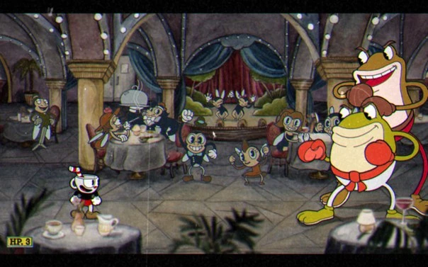
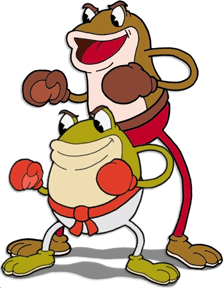

|
Меню
Создание игры и завязка игры
|
Рибби и КроксСтадииДва босса и три фазы. Являются двумя жабами и считаются самыми сложными боссами в первом мире (Чернильный остров один). Первые две фазы довольно лёгкие, если научиться им противостоять, однако третья фаза, которая отсутствует на минимальной сложности, является самой сложной (они превращаются в игровой автомат), из-за чего новичкам лучше оставлять этих боссов напоследок.Рибби: выгладит как салатовая лягушка в красных боксёрских перчатках. На нём одеты белые штаны с красным поясом. Его живот и губы светло-жёлтого цвета. Над глазами имеет коричневые брови.Крокс: выглядит как лягушка болотного цвета с коричневыми боксёрскими перчатками. Ростом он заметно выше чем Рибби. Одет в красные штаны с коричневым поясом. Его живот и губы бежевого цвета. Над глазами имеет коричневые брови.На последней фазе Крокс проглатывает Рибби и они превращаются в игровой автомат жёлто-коричневого цвета.
Интересные фактыЕсли игрок умрёт во время того как Рибби и Крокс переходят в третью фазу, будет виден экран смерти третьей фазы,из двух лягушек только, Рибби появлялся в хорошей концовке,в битве с Рибби и Кроксом есть много отсылок на игру Street Fighter,Рибби и Крокс — единственный двойной босс с общим здоровьем (даже если стрелять только в одного из них, то урон будет наноситься обоим). |